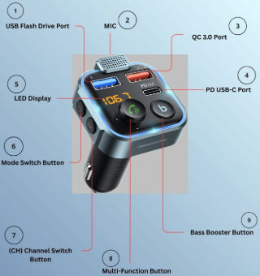

What is the UNBREAKcable Car FM Transmitter?
This device is a simple plug-in car adapter that is used in older vehicles to provide modern streaming capabilities for music and hands-free calling, giving users a higher quality in-car audio experience.
Car transmitters work by broadcasting audio from a connected device over an unused radio frequency on your car's radio. This device is compatible with any vehicles with a 12 Volt-24 Volt power. The device provides two separate audio outputs, Bluetooth via mobile/electronic devices and an audio USB flash drive Port for downloaded music files (up to 64GB), and has two extra ports for charging electronic devices.
Core Components of the Device:

- USB Flash Drive Port: USB-A audio port for playing music files on USB thumb drive.
- MIC: Used for hands-free calling and activating voice assistants on connected mobile/electronic device.
- QC 3.0 Port: Quick-charge(QC) USB-A port designed for rapid charging.
- PD USB-C Port: Power Delivery (PD) type-C port also for rapid charging.
- LED Display: Screen that displays radio frequency and car battery voltage.
- Mode Switch: allows user to toggle between Bluetooth Mode and USB Flash Drive Mode.
- (CH) Channel Button: used to manually switch frequencies on the FM transmitter.
- Multi-Function Button: A joystick that acts as a central-hub for multiple functions.
- Bass Booster: Provides bass music quality by amplifying low-frequency audio when activated.